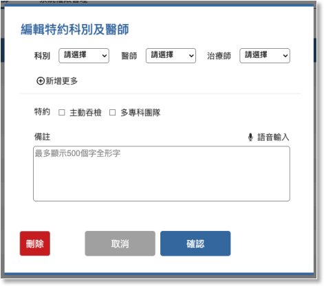

05-3-1 編輯特別科別及醫師


功能
內容

說明

編輯特約科別及醫師功能規則
1. 此功能只提供給總管理者及住院管理者瀏覽及編輯。
2. 點任一特約科別及醫師資料列，進入編輯狀態時，自動帶出已存在資料的相關欄位。
3. 設定為主吞的治療師有瀏覽”主動吞檢初選”名單的權限，且預設畫面會顯示相對應的科別、醫師的病患清單。

科別
下拉選項
美崙院區所有科別
醫師
下拉選項
美崙院區所有醫師
治療師
下拉選項
”05-1 人員管理”中的所有語言治療師。
新增多組設定
按鈕
1. 點選後複制一份可另外設定的科別、醫師、治療師，確認儲存後，約科別及醫師列表顯示2筆資料。
2. 每次最多複制一組。
特約
多選項
checkbox
選項：
- 主動吞檢
- 多專科團隊
備註
多行文字框
最多輸入500個全形字，可透過語音轉文字的方式輸入。
記錄按鈕
- 確定
- 取消
- 刪除，再次確認是否要刪除。